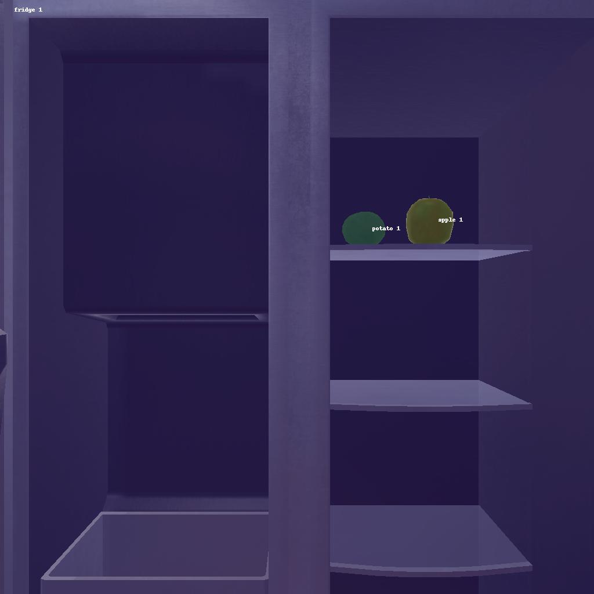

---------------------------------------------------------task: 12---------------------------------------------------------
--------------------------------------------------------------------------------------------------------------------------------------------------------------------
--------------------------------------------------------------------------------------------------------------------------------------------------------------------
Step:--------------------------------------------------------------------------7-------------------------------------------------------------------------------
----------------------------------------
VLM Prompt:
Image1:
**Instruction**
1. Analyze the provided image to identify all visible household objects, focusing on those relevant to the task description "clean some tomato and put it in countertop."
2. Use the analysis of the image and the task hint "The agent must find an object of the desired type, pick it up, go to a sink or a basin, clean the object with a sink or basin, and then find the correct location to place it and put it down there. The agent does not need to use soap bottle or faucet to clean the object, and the agent just needs to do action that is "clean the object with the sink or sink basin"." to answer the question: what is the most reasonable action in the choices for the task description "clean some tomato and put it in countertop"?
4. Decide and write the answer using the template: The answer is: (i): , where i is the real number. If there is no desired object in the image, search every place based on **Initial Observation** to find the object. And if no one is exactly correct, choose a similar answer.
**Initial Observation**
You are in the middle of a room. Looking quickly around you, you can see cabinet (1-6), microwave (1), countertop (1-2), coffeemachine (1), toaster (1), sink (1), sinkbasin (1), fridge (1)
**Answer Choices**
(1): go to cabinet 1
(2): go to cabinet 2
(3): go to cabinet 3
(4): go to microwave 1
(5): go to cabinet 4
(6): go to cabinet 5
(7): go to cabinet 6
(8): go to countertop 1
(9): go to coffeemachine 1
(10): go to toaster 1
(11): go to countertop 2
(12): go to sink 1
(13): go to sinkbasin 1
(14): open fridge 1
(15): close fridge 1
(16): take apple 1 from fridge 1
(17): take potato 1 from fridge 1
(18): examine fridge 1
**Answer**
Let's think step by step by following the instructions.
----------------------------------------
----------------------------------------
Original Response:
The task is to clean a tomato and put it on the countertop. The image shows the inside of a fridge with a potato and an apple, but no tomato is visible. Therefore, we must search every place based on the Initial Observation to find the tomato.
The most reasonable action from the choices provided would be to check the cabinets, as tomatoes are not typically stored in the fridge or appliances like microwaves, coffee machines, or toasters. Since we are looking for a tomato, it is less likely to be in the sink or sink basin, as these are places to clean the tomato, not to find it.
The answer is: (1): go to cabinet 1. If the tomato is not in cabinet 1, we would continue with cabinets 2-6 until the tomato is found. After finding the tomato, we would then go to the sink or sink basin to clean it and finally place it on the countertop.
----------------------------------------
----------------------------------------
>>> Refine Original VLM Response and Get Pure Action: go to cabinet 1
----------------------------------------
-----------------------------------------------------------------
Running time: 8.244810819625854 seconds
Total Money: 3.8297500000000007
-----------------------------------------------------------------
-----------------------------------------------------------------
Text Observation:You arrive at loc 0. The cabinet 1 is open. On the cabinet 1, you see nothing.
-----------------------------------------------------------------
UNSUCCEED